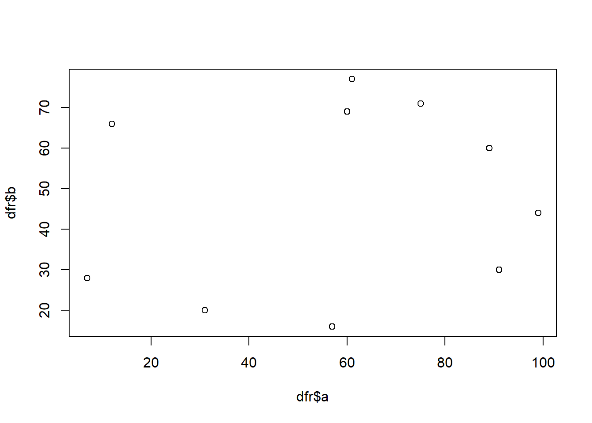
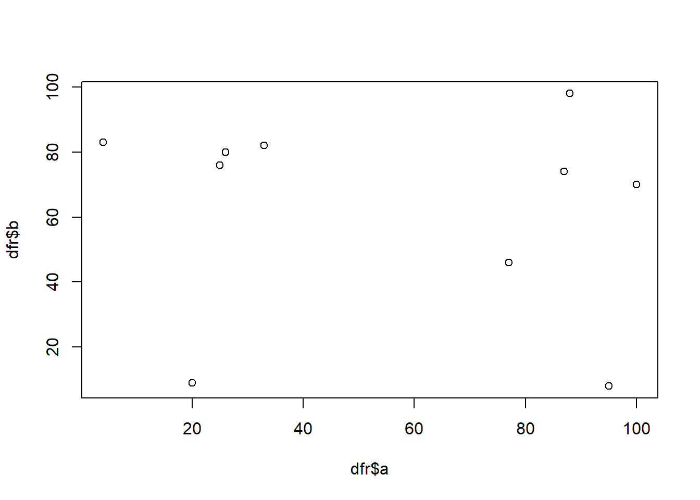
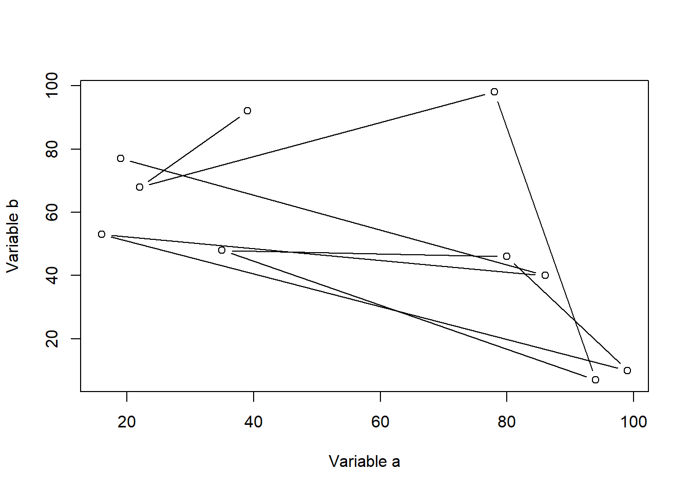
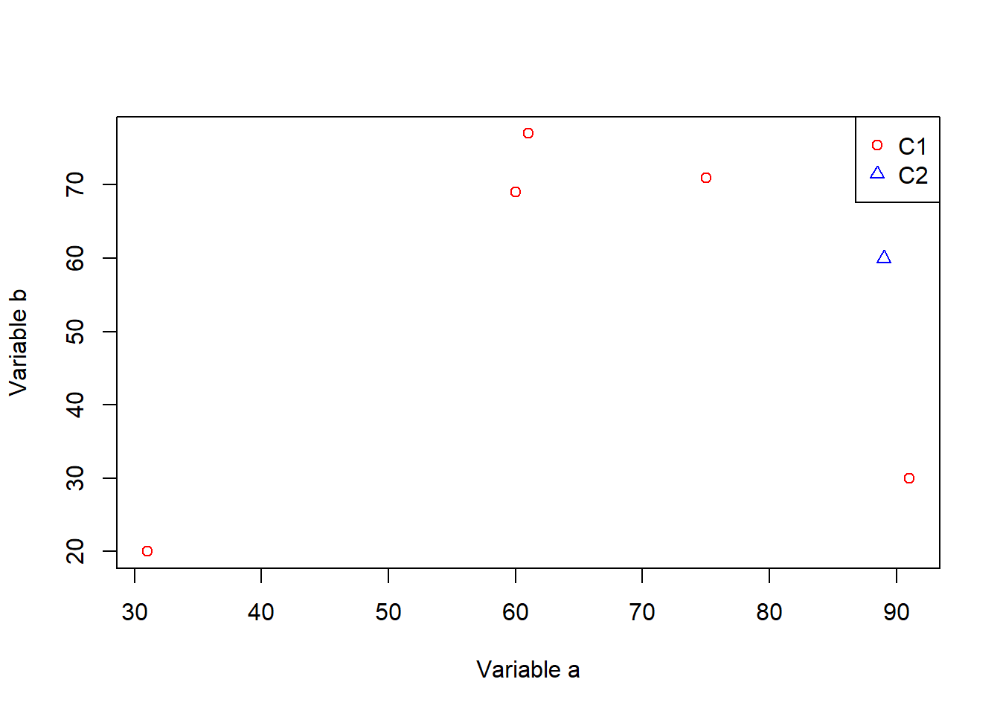
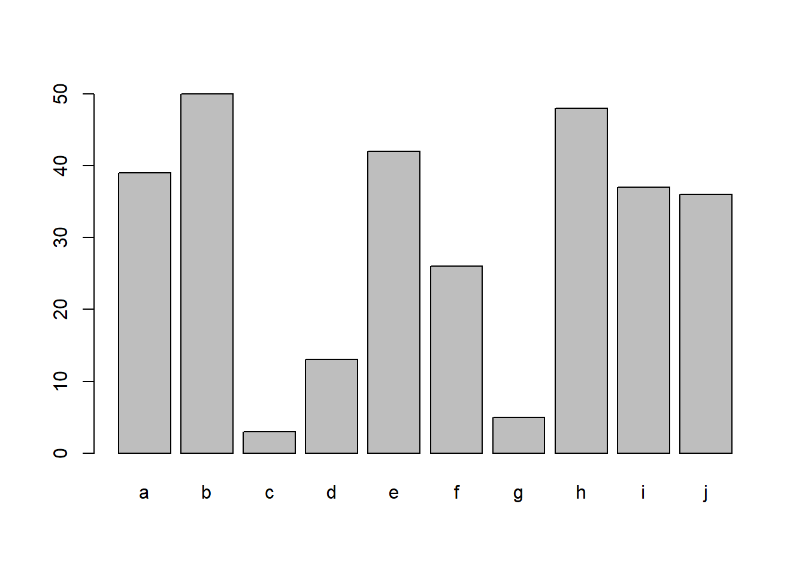
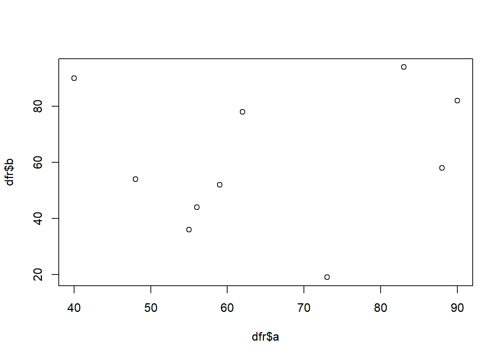
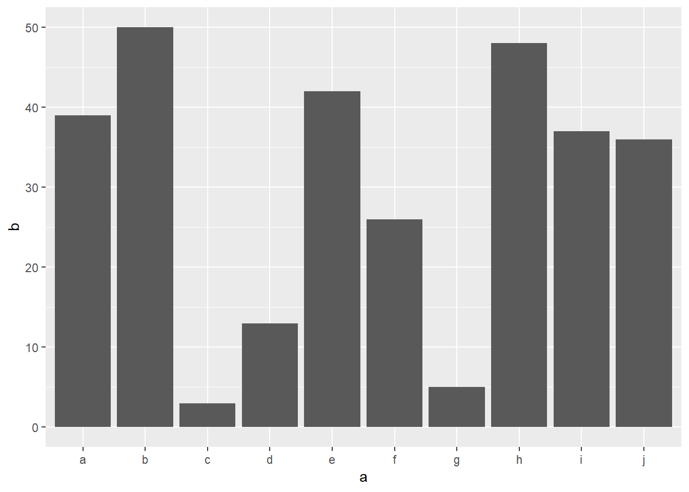

Introduction To R
Roy Francis | 28-Aug-2018
1 Topics
This tutorial aims to get you started with R. It roughly covers the following topics:
- Familiarise yourself with R & RStudio environment
- Running code, scripting and sourcing script
- Variables and operators
- Data types & datatype conversion
- Creating and running functions
- Base and grid graphics
- Input & output from R
2 What? Why R?
This is the definition provided by R-Project.
R is a language and environment for statistical computing and graphics.
Pros
- Data analysis
- Statistics
- High quality graphics
- Huge number of packages
- R is popular
- Reproducible research
- RStudio IDE
- FREE! Open source
Cons
- Steep learning curve
- Not elegant/consistent
- Slow
3 Getting started
R can be installed from r-project.org for Windows, Mac or Linux operating systems. It is also necessary to install Rtools from here for building packages from source when installing new packages.
RStudio is one of the best IDE (Integrated development environment) out there for any language. Download here for Windows, Mac or Linux. Rstudio provides you with an environment for organising your R projects, files and outputs. You also get debugging tools and GUI interfaces to common basic operations.
R commands are excecuted and results and returned in the Console. The Console shows a > symbol meaning that it is ready to accept commands. When it is waiting for further information, it shows a + symbol. This can happen when you have pasted in partial command or forgot to close parenthesis etc. Provide the required information, complete the command or press Esc on the keyboard to exit from the + back to the >.
Run a command in the R console.
getwd()## [1] "D:/data/Box Sync/nbis/teaching/2018/r-intro"This command prints the current working directory. When you read or write, this is the path that R looks for.
Commands written in the Console are executed and lost. R commands can be saved as a script. To create a new script, go to File > New File > R Script. This text file can be saved to the working directory named script.R. Now add some R command to the file. For example try;
sessionInfo()## R version 3.5.0 (2018-04-23)
## Platform: x86_64-w64-mingw32/x64 (64-bit)
## Running under: Windows >= 8 x64 (build 9200)
##
## Matrix products: default
##
## locale:
## [1] LC_COLLATE=English_United Kingdom.1252
## [2] LC_CTYPE=English_United Kingdom.1252
## [3] LC_MONETARY=English_United Kingdom.1252
## [4] LC_NUMERIC=C
## [5] LC_TIME=English_United Kingdom.1252
##
## attached base packages:
## [1] stats graphics grDevices utils datasets methods base
##
## other attached packages:
## [1] captioner_2.2.3 ggplot2_3.0.0 bookdown_0.7 knitr_1.20
##
## loaded via a namespace (and not attached):
## [1] Rcpp_0.12.18 highr_0.7 compiler_3.5.0 pillar_1.3.0
## [5] plyr_1.8.4 bindr_0.1.1 tools_3.5.0 digest_0.6.15
## [9] jsonlite_1.5 evaluate_0.11 tibble_1.4.2 gtable_0.2.0
## [13] png_0.1-7 pkgconfig_2.0.1 rlang_0.2.2 rstudioapi_0.7
## [17] yaml_2.2.0 xfun_0.3 bindrcpp_0.2.2 withr_2.1.2
## [21] stringr_1.3.1 dplyr_0.7.6 rprojroot_1.3-2 grid_3.5.0
## [25] tidyselect_0.2.4 glue_1.3.0 R6_2.2.2 rmarkdown_1.10
## [29] xaringan_0.7 purrr_0.2.5 magrittr_1.5 backports_1.1.2
## [33] scales_0.5.0 htmltools_0.3.6 assertthat_0.2.0 colorspace_1.3-2
## [37] labeling_0.3 stringi_1.2.4 lazyeval_0.2.1 munsell_0.5.0
## [41] crayon_1.3.4This command gives you a summary of the current system setup including R version, operating system and R packages that are loaded/attached.
Select the text or place the cursor on that line and click Run. Alternatively use keyboard shortcut Ctrl+R or Ctrl+Enter / Command+Enter.
Now add another command, say, Sys.Date(), which returns the current system date. Then save the file. All commands in the saved script.R can be run as a batch either by selecting all the commands followed by Run / Ctrl+Enter, or directly sourcing the file from the console like this:
source("script.R")
4 Variables & Operators
4.1 Basic Operators
Variables are assigned usually using the <- operator. The = operator also works in a similar way for most part.
x <- 4
x = 4
x## [1] 4The commonly used arithmetic operators are shown below returning a number.
x <- 4
y <- 2
# add
x + y
# subtract
x - y
# multiply
x * y
# divide
x / y
# modulus
x %% y
# power
x ^ y## [1] 6
## [1] 2
## [1] 8
## [1] 2
## [1] 0
## [1] 164.2 Logical Operators
Logical operators return a logical TRUE or FALSE.
# equal to?
x == y
# not equal to?
x != y
# greater than?
x > y
# less than?
x < y
# greater than or equal to?
x >= y
# less than or equal to?
x <= y## [1] FALSE
## [1] TRUE
## [1] TRUE
## [1] FALSE
## [1] TRUE
## [1] FALSEThe OR operator | and the AND operator & is useful when dealing with logical statements.
(x > y) | (y < x)
(x > y) & (y < x)## [1] TRUE
## [1] TRUEIn case of multiple logicals, any() and all() functions are useful.
# are any of these true?
any(c(F,F,F,T,F,F))## [1] TRUE# are all of these true?
all(c(F,F,F,T,F,F))## [1] FALSECharacters/strings can be assigned to variables in a similar manner.
z <- "this"
z1 <- "that"
paste(z,z1)## [1] "this that"The function paste() concatenates strings.
Variables names must be selected such that they do not conflict with existing variables/functions. For example, variable name c must be avoided as it is an existing function to concatenate R objects. The variable name t must be avoided as it is a function to transpose a matrix. Variable names must not start with a number.
5 Data Types
5.1 Overview
Overview of data structures in R
R data object that have a single type of data are referred to as homogenous data type. These are also called atomic types. Heterogenous objects have mixed data types.
5.2 Homogenous data
5.3 Basic
The mode of a variable is inspected using the function mode(). Here we can see some of the basic data objects in R.
mode(1.0)
mode(1L)
mode("hello")
mode(factor(1))
mode(T)## [1] "numeric"
## [1] "numeric"
## [1] "character"
## [1] "numeric"
## [1] "logical"Factors are explained further below. The type of a variable can be inspected using the function typeof().
typeof(1.0)
typeof(1L)
typeof("hello")
typeof(factor(1))
typeof(T)## [1] "double"
## [1] "integer"
## [1] "character"
## [1] "integer"
## [1] "logical"Other useful functions for inspecting R objects.
class(x)
str(x)
structure(x)## [1] "numeric"
## num 4
## [1] 45.3.1 Vectors
Vectors store multiple values. Multiple values, variables and vectors are concatenated together using the function c().
x <- c(2,3,4,5,6)
y <- c("a","c","d","e")
x
y## [1] 2 3 4 5 6
## [1] "a" "c" "d" "e"There are different ways to create vectors. Here are a few:
c(2,3,5,6)
2:8
seq(2,5,by=0.5)
rep(1:3,times=2)
rep(1:3,each=2)## [1] 2 3 5 6
## [1] 2 3 4 5 6 7 8
## [1] 2.0 2.5 3.0 3.5 4.0 4.5 5.0
## [1] 1 2 3 1 2 3
## [1] 1 1 2 2 3 3R uses 1-based indexing system and a specific value from a specific location in the vector is accessed using the [] operator.
x[1]
y[3]## [1] 2
## [1] "d"The c() function can be used to specify multiple positions.
x[c(1,3)]## [1] 2 4The above vector is 1-dimensional and composed of the same data type (homogenous). Such vectors are referred to as atomic vectors.
mode(x)
mode(y)
str(x)
str(y)## [1] "numeric"
## [1] "character"
## num [1:5] 2 3 4 5 6
## chr [1:4] "a" "c" "d" "e"Vectors can be added or concatenated directly. This is referred to as a vectorised operation, a crucial concept in R.
x <- c(2,3,4,5)
y <- c(9,8,7,6)
x+y
z <- c("a","an","a","a")
k <- c("boy","apple","girl","mess")
paste(z,k)## [1] 11 11 11 11
## [1] "a boy" "an apple" "a girl" "a mess"Verify if an R object is atomic (contains a single data type).
is.atomic(x)## [1] TRUEis.numeric(x)
is.character(z)## [1] TRUE
## [1] TRUEA vector of logical type is called a logical vector.
x <- c(T,F,T,T)
is.logical(x)## [1] TRUEVectorised logical operations can be performed on logical vectors.
c(F,T,F,F) | c(F,F,F,F)
c(F,T,F,F) & c(F,F,F,F)## [1] FALSE TRUE FALSE FALSE
## [1] FALSE FALSE FALSE FALSEVectors can be named if required.
x <- c("a"=2,"b"=3,"c"=8)
x## a b c
## 2 3 8Named vectors can be subsetted using the name.
x["c"]## c
## 85.3.2 Factors
Factors are vectors that store categorical data.
x <- factor(c("a","b","b","c","c"))
class(x)
str(x)## [1] "factor"
## Factor w/ 3 levels "a","b","c": 1 2 2 3 3Factor ‘x’ has 3 categories or in R speak; 3 levels.
levels(x)## [1] "a" "b" "c"Verify if an R object is a factor.
is.factor(x)## [1] TRUE5.3.3 Matrix
Vectors can be assembled into a matrix data structure.
x <- matrix(c(2,3,4,5,6,7))
x## [,1]
## [1,] 2
## [2,] 3
## [3,] 4
## [4,] 5
## [5,] 6
## [6,] 7A matrix is a 2D data structure with rows and columns.
# dimensions
dim(x)
# number of rows
nrow(x)
# number of columns
ncol(x)## [1] 6 1
## [1] 6
## [1] 1The number of rows and columns can be specified when building the matrix. The matrix can be filled up row-wise (byrow=T) or colum-wise (byrow=F).
x <- matrix(c(2,3,4,5,6,7),nrow=3,ncol=2,byrow=TRUE)
x## [,1] [,2]
## [1,] 2 3
## [2,] 4 5
## [3,] 6 7str(x)## num [1:3, 1:2] 2 4 6 3 5 7Verify if an R object is a matrix.
is.matrix(x)## [1] TRUEMatrix positions can be accessed using the [] operator by specifying the row and column [row,col].
x[2,2]## [1] 5A whole row or a column can be accessed by [row,] or [,col].
x[1,]
x[,2]## [1] 2 3
## [1] 3 5 7Notice that this automatically creates a vector. The matrix data type can be retained by specifying drop=FALSE.
x[1,,drop=F]
x[,2,drop=F]## [,1] [,2]
## [1,] 2 3
## [,1]
## [1,] 3
## [2,] 5
## [3,] 7Column names and row names can be added to matrices.
rownames(x) <- c("a","b","c")
colnames(x) <- c("k","p")Then the matrix can be accessed using these labels.
x["b",]
x[,"p"]## k p
## 4 5
## a b c
## 3 5 75.4 Heterogenous data
5.4.1 Lists
List elements can be mixed data type and is built using list() rather than c().
x <- list(c(2,3,4,5),c("a","b","c","d"),factor(c("a","a","b")),
matrix(c(3,2,3,5,6,7),ncol=2))
x## [[1]]
## [1] 2 3 4 5
##
## [[2]]
## [1] "a" "b" "c" "d"
##
## [[3]]
## [1] a a b
## Levels: a b
##
## [[4]]
## [,1] [,2]
## [1,] 3 5
## [2,] 2 6
## [3,] 3 7typeof(x)
class(x)## [1] "list"
## [1] "list"str(x)## List of 4
## $ : num [1:4] 2 3 4 5
## $ : chr [1:4] "a" "b" "c" "d"
## $ : Factor w/ 2 levels "a","b": 1 1 2
## $ : num [1:3, 1:2] 3 2 3 5 6 7Lists are recursive as there can be lists inside lists.
str(list(list(list(list()))))## List of 1
## $ :List of 1
## ..$ :List of 1
## .. ..$ : list()Verify if an R object is a list.
is.list(x)## [1] TRUEList are accessed using [] and [[]]. [] returns a list while [[]] returns the object inside the list.
x[1]## [[1]]
## [1] 2 3 4 5x[1:2]
class(x[1:2])## [[1]]
## [1] 2 3 4 5
##
## [[2]]
## [1] "a" "b" "c" "d"
##
## [1] "list"x[[4]]
class(x[[4]])## [,1] [,2]
## [1,] 3 5
## [2,] 2 6
## [3,] 3 7
## [1] "matrix"List items can also be named. Let’s add a list into our list.
x$newlist <- list(c(500,600,700))
x## [[1]]
## [1] 2 3 4 5
##
## [[2]]
## [1] "a" "b" "c" "d"
##
## [[3]]
## [1] a a b
## Levels: a b
##
## [[4]]
## [,1] [,2]
## [1,] 3 5
## [2,] 2 6
## [3,] 3 7
##
## $newlist
## $newlist[[1]]
## [1] 500 600 700Lists can be accessed by the name.
x$newlist## [[1]]
## [1] 500 600 700Use unlist() to remove the list structure.
unlist(x$newlist)## [1] 500 600 7005.4.2 data.frame
data.frames are the most common way to store data in R. data.frames are basically lists of equal-length vectors. Like matrices, dataframe 2D with rows and columns. data.frames are created using the function data.frame().
dfr <- data.frame(x = 1:3, y = c("a", "b", "c"))
print(dfr)## x y
## 1 1 a
## 2 2 b
## 3 3 cNotice that we have named the columns as ‘x’ and ‘y’.
str(dfr)## 'data.frame': 3 obs. of 2 variables:
## $ x: int 1 2 3
## $ y: Factor w/ 3 levels "a","b","c": 1 2 3Notice that column ‘y’ has been automatically converted to a factor. This is the root of a lot of issues for new R users. It is best to avoid the automatic conversion by setting stringsAsFactors=FALSE.
dfr <- data.frame(x = 1:3, y = c("a", "b", "c"), stringsAsFactors = F)
str(dfr)## 'data.frame': 3 obs. of 2 variables:
## $ x: int 1 2 3
## $ y: chr "a" "b" "c"Verify if an R object is a ‘data.frame’.
is.data.frame(dfr)## [1] TRUEAccessing positions in a data.frame is similar to matrices. In addition, the $ operator is also commonly used to access a column.
dfr$x
dfr$y## [1] 1 2 3
## [1] "a" "b" "c"Subset a data.frame() conditionally.
subset(dfr,dfr$y=="a")5.5 Type conversion
Several functions are available to convert R objects from one type to another.
x <- c(1,2,3)
str(x)## num [1:3] 1 2 3y <- as.character(x)
str(y)## chr [1:3] "1" "2" "3"The numeric vector has been converted to a character vector. Similarly, character can be coerced (if possible) into numbers.
x <- c("1","2","hello")
str(x)## chr [1:3] "1" "2" "hello"str(as.numeric(x))## num [1:3] 1 2 NANotice that characters that cannot be converted to a valid number is converted to NA along with a warning message.
6 Functions
Functions are chunks of code packaged into reusable units. We have used many functions in the previous sections such as c(), str(), is.list() etc.
6.1 Built-In
Functions that come with the base R installation are referred to as built-in functions or base functions. R has loads of built-in functions for various applications such as data analysis, programming, math, plotting etc. Additional functions can be made available by installing external packages.
Below are some functions that can be applied to numeric data:
# generate 10 random numbers between 1 and 200
x <- sample(x=1:200,10)
# length
length(x)
# sum
sum(x)
# mean
mean(x)
# median
median(x)
# min
min(x)
# log
log(x)
# exponent
exp(x)
# square-root
sqrt(x)
# round
round(x)
# sort
sort(x)## [1] 10
## [1] 1053
## [1] 105.3
## [1] 106.5
## [1] 9
## [1] 4.644391 3.178054 5.062595 4.574711 4.691348 5.273000 5.164786
## [8] 3.465736 5.010635 2.197225
## [1] 1.467662e+45 2.648912e+10 4.154590e+68 1.338335e+42 2.178204e+47
## [6] 4.868823e+84 1.003539e+76 7.896296e+13 1.393710e+65 8.103084e+03
## [1] 10.198039 4.898979 12.569805 9.848858 10.440307 13.964240 13.228757
## [8] 5.656854 12.247449 3.000000
## [1] 104 24 158 97 109 195 175 32 150 9
## [1] 9 24 32 97 104 109 150 158 175 195Some useful string functions.
a <- "sunny"
b <- "day"
# join
paste(a, b)
# find a pattern
grep("sun", a)
# number of characters
nchar("sunny")
# to uppercase
toupper("sunny")
# to lowercase
tolower("SUNNY")
# replace pattern
sub("sun", "fun", "sunny")
# substring
substr("sunny", start=1, stop=3)## [1] "sunny day"
## [1] 1
## [1] 5
## [1] "SUNNY"
## [1] "sunny"
## [1] "funny"
## [1] "sun"Some general functions
print("hello")
print("world")
cat("hello")
cat(" world")
cat("\nhello\nworld")## [1] "hello"
## [1] "world"
## hello world
## hello
## world6.2 Custom
If you see yourself copy-pasting a chunk of R code many times, then it is probably a good idea to create a function out of it.
Let’s say you have two vectors that you would like to perform a series of operations on and then output a result.
a <- 1:6
b <- 8:10
d <- a*b
e <- log(d)
f <- sqrt(e)
f## [1] 1.442027 1.700109 1.844234 1.861649 1.951067 2.023449You can modify this code block into a function as follows:
my_function <- function(a, b){
d <- a*b
e <- log(d)
f <- sqrt(e)
return(f)
}Once defined, you can use this wherever needed.
my_function(a=2:4, b=6:8)## [1] 1.576359 1.744856 1.861649a and b are called arguments or parameters to the function. If they are explicity written, then the position defines which parameter they are.
# this
my_function(a=2:4, b=6:8)
# is the same as this
my_function(b=2:4, a=6:8)
# and the same as this
my_function(2:4, 6:8)## [1] 1.576359 1.744856 1.861649
## [1] 1.576359 1.744856 1.861649
## [1] 1.576359 1.744856 1.861649In this case my_function(2:4,6:8), argument a is 2:4 and argument b is 6:8. In this case my_function(6:8,2:4), argument a is 6:8 and argument b is 2:4.
Variables defined within a function are only available within that function and not available outside that function unless returned.
my_new_function <- function(a) {
varz <- a + 2
return(varz)
}
my_new_function(5)
print(varz)## Error in print(varz): object 'varz' not found## [1] 7In the above function, variable varz created inside the function is not available outside of that function.
But the reverse is possible.
my_new_function <- function() {
varz <- foo + 2
return(varz)
}
foo <- 55
my_new_function()## [1] 57In the example above, variable foo used inside the function is not supplied to the function through an argument, yet it still manages to find it. When a function doesn’t find a variable inside a function, it searches outside the function.
7 Control Structures
Conditional statements are written using if().
a <- 2
b <- 5
if(a < b) print(paste(a,"is smaller than",b))## [1] "2 is smaller than 5"else is used to add an alternative output.
a <- 2
b <- 5
if(a < b) {
print(paste(a,"is smaller than",b))
}else{
print(paste(b,"is smaller than",a))
}
a <- 60
b <- 10
if(a < b) {
print(paste(a,"is smaller than",b))
}else{
print(paste(b,"is smaller than",a))
}## [1] "2 is smaller than 5"
## [1] "10 is smaller than 60"if else statements can be chained together:
grade <- "B"
if(grade == "A"){
print("Grade is Excellent!")
}else if(grade == "B"){
print("Grade is Good.")
} else if (grade == "C") {
print("Grade is Alright.")
}## [1] "Grade is Good."The for() loop is useful to run commands repeatedly over a known number of iterations.
for (i in 1:5){
print(i)
}## [1] 1
## [1] 2
## [1] 3
## [1] 4
## [1] 5The while() loop is useful to run commands repeatedly for an unknown number of iterations until a condition is satisfied.
i <- 1
while(i < 5){
print(i)
i <- i+1
}## [1] 1
## [1] 2
## [1] 3
## [1] 48 R packages
R packages extend the functionality of base R. R packages are stored in repositories of which the most commonly used is called CRAN (The Comprehensive R Archive Network).
Packages are installed using the function install.packages(). Let’s install the graphics and plotting package ggplot2 which will be useful in later sections.
install.packages("ggplot2",dependencies=TRUE)Packages can also be installed from a local zipped file by providing a local path ans setting type="source".
install.packages("./dir/package.zip",type="source")Inside RStudio, installing packages is much easier. Go to the Packages tab and click Install. In the window that opens up, you can find your package by typing into the Packages field and clicking Install.
Packages on GitHub can be installed using the function install_github() from package devtools.
9 Graphics
9.1 Base graphics
R is an excellent tool for creating graphs and plots. The graphic capabilities and functions provided by the base R installation is called the base R graphics. Numerous packages exist to extend the functionality of base graphics.
We can try out plotting a few of the common plot types. Let’s start with a scatterplot. First we create a data.frame as this is the most commonly used data object.
dfr <- data.frame(a=sample(1:100,10),b=sample(1:100,10))Now we have a dataframe with two continuous variables that can be plotted against each other.
plot(dfr$a,dfr$b)
This is probably the simplest and most basic plots. We can modify the x and y axis labels.
plot(dfr$a,dfr$b,xlab="Variable a",ylab="Variable b")
We can change the point to a line.
plot(dfr$a,dfr$b,xlab="Variable a",ylab="Variable b",type="b")
Let’s add a categorical column to our dataframe.
dfr$cat <- rep(c("C1","C2"),each=5)And then colour the points by category.
# subset data
dfr_c1 <- subset(dfr,dfr$cat == "C1")
dfr_c2 <- subset(dfr,dfr$cat == "C2")
plot(dfr_c1$a,dfr_c1$b,xlab="Variable a",ylab="Variable b",col="red",pch=1)
points(dfr_c2$a,dfr_c2$b,col="blue",pch=2)
legend(x="topright",legend=c("C1","C2"),
col=c("red","blue"),pch=c(1,2))
Let’s create a barplot.
ldr <- data.frame(a=letters[1:10],b=sample(1:50,10))
barplot(ldr$b,names.arg=ldr$a)
9.2 Grid graphics
Grid graphics have a completely different underlying framework compared to base graphics. Generally, base graphics and grid graphics cannot be plotted together. The most popular grid-graphics based plotting library is ggplot2.
Let’s create the same plot are before using ggplot2. Make sure you have the package installed.
library(ggplot2)
ggplot(dfr,aes(x=a,y=b,colour=cat))+
geom_point()+
labs(x="Variable a",y="Variable b")
It is generally easier and more consistent to create plots using the ggplot2 package compared to the base graphics.
Let’s create a barplot as well.
ggplot(ldr,aes(x=a,y=b))+
geom_bar(stat="identity")
10 Input/Output
Input and output of data and images is an important aspect with data analysis.
10.1 Text
Data can come in a variety of formats which needs to be read into R and converted to an R data type.
Text files are the most commonly used input. Text files can be read in using the function read.table. We have a sample file to use: iris.txt.
dfr <- read.table("iris.txt",header=TRUE,stringsAsFactors=F)This reads in a tab-delimited text file with a header. The argument sep='\t' is set by default to specify that the delimiter is a tab. stringsAsFactors=F setting ensures that character columns are not automatically converted to factors.
It’s always a good idea to check the data after import.
head(dfr)str(dfr)## 'data.frame': 150 obs. of 5 variables:
## $ Sepal.Length: num 5.1 4.9 4.7 4.6 5 5.4 4.6 5 4.4 4.9 ...
## $ Sepal.Width : num 3.5 3 3.2 3.1 3.6 3.9 3.4 3.4 2.9 3.1 ...
## $ Petal.Length: num 1.4 1.4 1.3 1.5 1.4 1.7 1.4 1.5 1.4 1.5 ...
## $ Petal.Width : num 0.2 0.2 0.2 0.2 0.2 0.4 0.3 0.2 0.2 0.1 ...
## $ Species : chr "setosa" "setosa" "setosa" "setosa" ...Check ?read.table for other wrapper functions to read in text files.
Let’s filter this data.frame and create a new dataset.
dfr1 <- dfr[dfr$Species == "setosa",]And we can write this as a text file.
write.table(dfr1,"iris-setosa.txt",sep="\t",row.names=F,
quote=F)sep="\t" sets the delimiter to tab. row.names=F denotes that rownames should not be written. quote=F specifies that doubles must not be placed around strings.
10.2 Images
Let’s take a look at saving figures.
10.2.1 Base
The general idea for saving plots is open a graphics device, create the plot and then close the device. We will use png here. Check out ?png for the arguments and other devices.
dfr <- data.frame(a=sample(1:100,10),b=sample(1:100,10))
png(filename="plot-base.png")
plot(dfr$a,dfr$b)
dev.off()10.2.2 ggplot2
The same idea can be applied to ggplot2, but in a slightly different way. First save the file to a variable, and then export the plot.
p <- ggplot(dfr,aes(a,b)) + geom_point()
png(filename="plot-ggplot-1.png")
print(p)
dev.off()ggplot2 also has another easier helper function to export images.
ggsave(filename="plot-ggplot-2.png",plot=p)11 Help
- Use
?functionto get function documentation - Use
??nameto search for a function - Use
args(function)to get the arguments to a function - Go to the package CRAN page/webpage for vignettes
- R bloggers: Great blog to follow to keep updated with the latest in the R world as well as tutorials.
- Stackoverflow: Online community to find solutions to your problems.
12 Learning R
There are lots of resources for getting help in R.
12.1 Reference
- R Cookbook: General purpose reference.
- Quick R: General purpose reference.
- Awesome R: Curated list of useful R packages.
- RStudio cheatsheets: Useful cheatsheets.
- Advanced R by Hadley Wickham (Medium to advanced content)
12.2 Tutorials
- Introduction to R: Tutorial by Datacamp with excellent tutorials.
- R programming tutorial: Youtube video tutorial by Derek Banas.
- R for data science Data science tutorial by Hadley wickham.
- Data carpentry Data carpentry R workshop
12.3 Links
- Tutorialspoint List: Good list of resources.
13 Useful packages
These are some useful packages when starting with data analysis in R.
- dplyr, tidyr: Data manipulation
- ggplot2: Data visualisation
- stringr: String manipulation
- lubridate: Date/time manipulation
- rmarkdown: Reproducible research and report generation

Built on : 28-Aug-2018 at 20:15:39. Graphics from
2018 | Roy Francis | SciLifeLab | NBIS